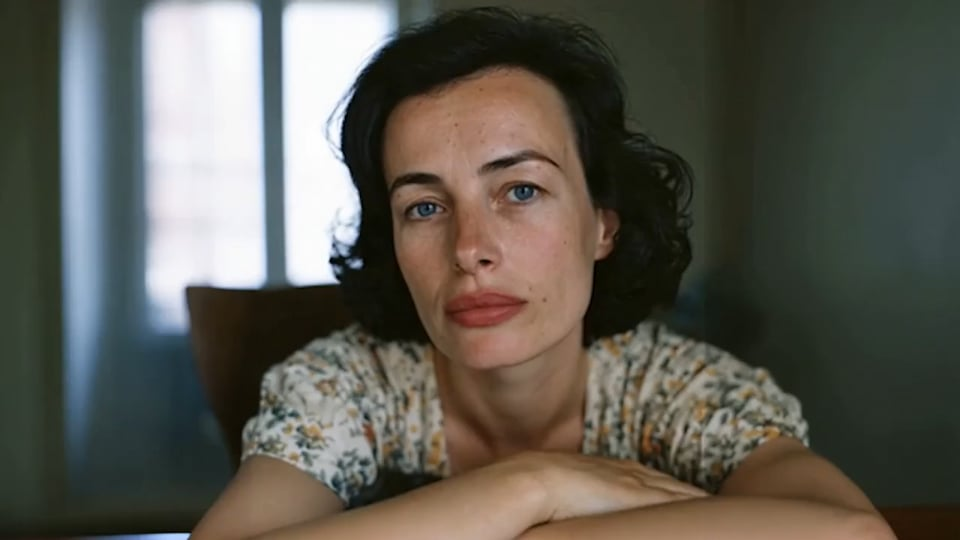
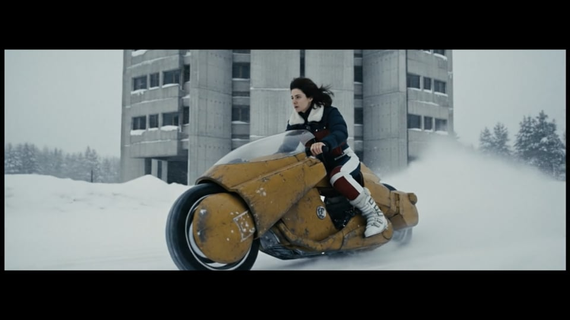
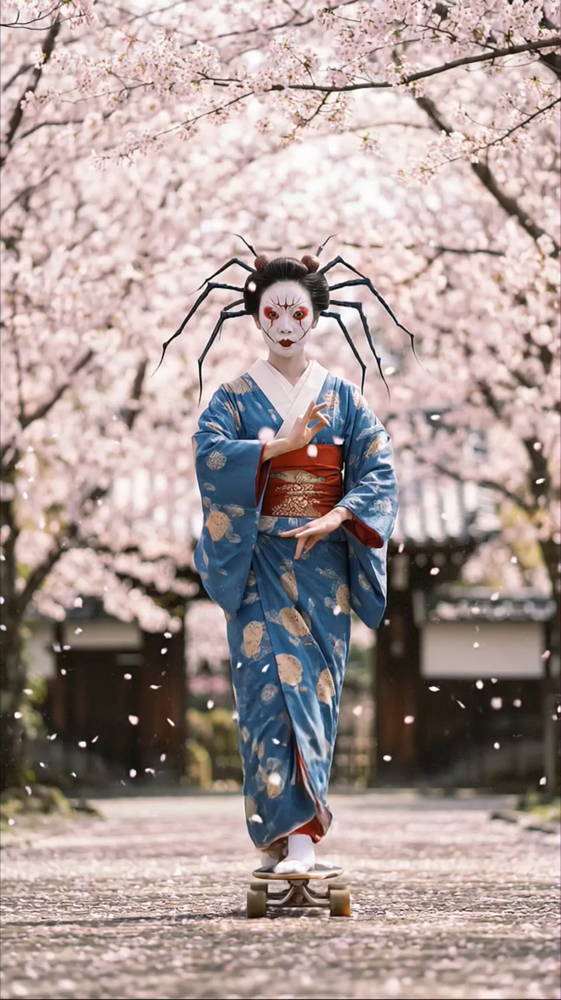

HORS-CHAMP / ÉTUDES VISUELLES
Carnets
de création.
Quelques images des films, observées à travers leur cadre, leur lumière et leur construction visuelle.

PHOTOGRAMME / Duel
01 / LE REGARD
La tension dans un détail.
Le cadre se resserre sur un œil. La lumière latérale révèle les textures. Le regard suffit à installer l’attente.
Voir l’œuvre ↗
PHOTOGRAMME / Avant l’oubli
02 / LE VISAGE
Une présence.
Le visage et la posture occupent le cadre. La profondeur de champ et la lumière de la fenêtre séparent la figure de l’espace derrière elle.
Voir l’œuvre ↗
PHOTOGRAMME / AI AKIRA
03 / L’UNIVERS
Un futur tangible.
La moto jaune se détache du paysage de béton et de neige. Le contraste des matières et des couleurs organise la lecture de l’action.
Voir l’œuvre ↗
PHOTOGRAMME / SPRING 2026
04 / LA SILHOUETTE
L’imaginaire en mouvement.
La figure en kimono et le longboard inscrivent un personnage singulier dans le décor des cerisiers en fleurs.
Voir l’œuvre ↗